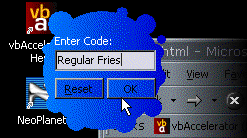

Bitmap Shape Project Files (37K)
Bitmap Shape Project Files (37K)
 13 Aug 1999
13 Aug 1999
First Posted
 Reading Data from Local or External Library Resources
Reading Data from Local or External Library Resources

Creating Window Shapes from Bitmaps
Now complete control over window shape is yours - for all Win OS
The Windows Shape article shows how to use the SetWindowRgn function to apply a geometric region to a window using the GDI region creation functions. However, beyond using a simple geometric region, things get difficult. How do you specify the exact shape you want?
This article demonstrates how to use a bitmap to create the Windows region for completely unique forms and controls!
Using Bitmaps For Regions
To a degree, VB allows you to do use Bitmaps to create Windows regions with UserControls (using the MaskPicture and setting the misleadingly named Transparent setting for the BackStyle property), but at a cost. The cost is performance - VB controls using these settings can quickly become unusable. So much so there are even warnings in the Books OnLine against using the setting if you use "... a complex bitmap".
An alternative which works on forms and other controls as well as VB UserControls is to use the SetWindowsRgn API to change the form shape. However, the main difficulty with this is determining how to convert a bitmap into a region in the first place. With the help of the DIBSection code elsewhere on this site though, it isn't that tricky.
Note that determining a region from a Bitmap at runtime can lead to performance problems. If you aren't a slave to VB's implementation, however, you can take the performance of complex region code to new levels by precompiling your region data in files or resources. Sounds good? Then read on.
Bitmap to Region
The first part of this problem is how to create a region from a bitmap. To do this, you need to be able to do two things:
- Read the colours of the pixels of the bitmap to determine which ones should be transparent.
- Remove transparent pixels from the region.
To get at bitmap bits, I use a DIBSection. DIBSections are a GDI object with two very useful properties:
- The bitmap data is stored as a Display Independent Bitmap (DIB), which means Windows will not attempt to map colours for you, or dither any pixels.
- The bitmap data is stored in Windows memory (rather than Graphics card memory), and is therefore directly accessible to Windows programs for reading or modification.
Once the bitmap is converted to a DIBSection, it is a simple matter to loop through the pixel data and determine the colours. More information on reading data within a DIBSection is given in the Image Processing samples at this site.
The next part is to convert the bitmap data to a Win32 region. This is achieved using just two Win32 region functions: CreateRectRgn and CombineRgn. The CombineRgn function is the powerful function in this instance. CombineRgn allows boolean operations to be used on a pair of regions so they can be combined in many ways: where they both intersect (RGN_AND), where either exists (RGN_OR), where either but not both exists (RGN_XOR) and so forth.
The simplified algorithm to set up the region from the bitmap is therefore:
For x = 0 to Width
For y = 0 to Height
If Pixel(x,y) = Transparent Then
If Not bInTransparent Then
bInTransparent = True
yStartTransparent = y
End If
Else
If bInTransparent Then
' Remove the transparent section from the region
hRgnTemp = CreateRectRgn(x,yStartTransparent,x+1,y)
CombineRgn hRgnOut, hRgnTemp, RGN_XOR
DeleteRgn hRgnTemp
bInTransparent = False
End If
End If
Next y
' If last transparent section extends to the width of the bitmap, then remove it:
If bInTransparent Then
hRgnTemp = CreateRectRgn(x,yStartTransparent,x+1,y)
CombineRgn hRgnOut, hRgnTemp, RGN_XOR
DeleteRgn hRgnTemp
bInTransparent = False
End If
Next x
This algorithm attempts to improve performance compared to the simple pixel by pixel algorithm by combining consecutive pixels in the y direction into a single rectangle. Potentially there are more optimisations to be made (Can you think of one?) Note that the real algorithm must also take into account that a DIBSection is flipped vertically in memory.
From Region to High Performance
So now we know how to create a region, however, if you experiment with the code you will soon see that the time it takes to create your region at run-time is significant if the source bitmap is large enough. If you need to work with an arbitrary bitmap at run-time then you must live with this performance hit (perhaps you could run some sort of attract sequence whilst the region create is running, similar to the way many Shockwave animations attempt to hide their pathetic load times). However, if you know the bitmap in advance, you can create the region for it almost instantaneously by loading precompiled region data in the form that GDI's region code wants it.
GDI provides a function GetRegionData to return a region's set-up information in native format, and also an inverse function ExtCreateRegion. With a little modification to the VB API viewer's declares for these functions, we can convert them into usable functions:
Private Declare Function GetRegionData Lib "gdi32" ( _ ByVal hRgn As Long, ByVal dwCount As Long, lpRgnData As Any) As Long Private Declare Function ExtCreateRegion Lib "gdi32" ( _ lpXform As Any, ByVal nCount As Long, lpRgnData As Any) As Long
Calling GetRegionData with the dwCount parameter set to zero and the lpRgnData parameter set to ByVal 0& returns the number of bytes of data required to hold the region data. Then you can dimension a byte array to hold this number of bytes. To get the data into the array of bytes, you then set dwCount to the number of bytes and pass a reference to the first byte of the array to the lpRgnData parameter.
To create a region, you just set the nCount parameter to the size of the array and pass the byte array back info lpRgnData. The lpXform parameter is an optional parameter which only works under Windows NT/2000/XP. This allows you to rotate the region as it is created using a rotation matrix. To ignore this parameter, pass in ByVal 0&.
Since the region data is now stored in a byte array, you can easily save and load it to a file or load it from a resource. See the article Reading data from local or external library resources for the details of how to do this.
Put it Into Use
To use the code here, you need to incorporate two class libraries into your project:
- cDIBSection - to allow creation of a DIBSection object to make the region from.
- cDIBSectionRegion - the region creation and managment class.
cDIBSection
The use of cDIBSection is described elsewhere on this site, however the only methods you will be interested in are the ones to create a bitmap to make your region from. These are:
- CreateFromPicture
Takes a StdPicture object and creates a DIBSection containing the same bitmap bits. - Create
Creates a DIBSection at the specified size. You can then use LoadPictureBlt to copy a bitmap from another hDC into the DIBSection.
Tip: Don't use a JPG file to create a window region.
Whilst JPG files often have the smallest size, they are a generally a poor choice for applications which need to create a mask (transparent) area. This is because JPG does not preserve colour stability in an image. If you look close at a "black" area in a JPG file, you will actually see that the pixels are all different, within around +/- 3 colour values of the actual value. This effect becomes more pronounced (in scale as well as value) as the quality of the JPG file is reduced.
cDIBSectionRegion
Once you have a cDIBSection object containing the picture you want to create a bitmap from, you can then use this class to create a region. The cDIBSectionRegion also contains methods to save region data to disk and to load region data from a file or a resource.
- Create
Builds a region from a cDIBSection picture. - Applied
Gets/sets whether the current region is applied to the specified window handle. - AppliedToCount
Returns the number of windows the current region is applied to. - hWndForIndex
Returns the window handle the region is applied to at the specified index. - Destroy
Destroys the region, removing it from any window handle it is applied to. - LoadFromFile
Loads a region from a file previously created using the Save method. - LoadFromResource
Loads a region from a user-defined resource creating from the output of the Save method. See the article Reading data from local or external library resources for details on how to create the resource. - Save
Saves the current region to a file for subsequent use with the LoadFromFile and LoadFromResource functions
The End of the Beginning
That's the end of arbitrary shaped windows under Win9x and NT. However, Windows 2000 and above include a new way for creating windows of any shape, including windows with semi-transparent (alpha-blended) regions and so on. These techniques are covered under the new Layered Windows API. See the article Windows Shapes Using Layering for details.